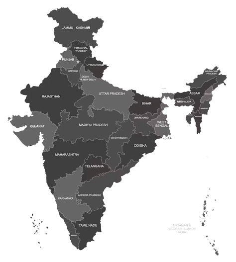

Andhra Pradesh
ఆంధ్ర ప్రదేశ్
Land of Spices - Rice Bowl of India, home to sacred Tirupati, rich Telugu culture, and classical arts. Known for its temples, cuisine, and spiritual heritage.

About Andhra Pradesh
Andhra Pradesh, located on the southeastern coast of India, is renowned for its rich cultural heritage, ancient temples, and spice trade. The state is home to the sacred Tirupati temple, one of the most visited pilgrimage sites in the world, and the historic city of Amaravati.
Known as the "Rice Bowl of India," Andhra Pradesh is famous for its classical dance forms like Kuchipudi, spicy cuisine, and handloom textiles. The state has a coastline of 974 km along the Bay of Bengal and is a major producer of rice, cotton, and various spices.
Historical Journey
Ancient & Medieval Era
Andhra Pradesh's history dates back to the Mauryan Empire and the Satavahana dynasty (2nd century BCE - 2nd century CE), which established Amaravati as a major Buddhist center. The region witnessed the rule of the Ikshvakus, Eastern Chalukyas, Kakatiyas, and Vijayanagara Empire, each contributing to its rich cultural and architectural heritage.
The Kakatiya dynasty (12th-14th century) built magnificent forts like Warangal and established Telugu as a court language. The Vijayanagara Empire (14th-17th century) saw a golden age of Telugu literature, arts, and temple architecture that continues to influence the region today.

Timeline Highlights

Vijayanagara Empire
Golden Age (14th-17th Century)
Flourishing of Telugu literature, classical arts, and temple architecture. Patronage of poets and scholars.
Cultural Legacy
Krishnadevaraya's rule marked the peak of Telugu literature with works like Amuktamalyada, influencing arts for centuries.
Architectural Marvels
Lepakshi, Tirupati, and numerous temples showcase Vijayanagara's architectural excellence and artistic legacy.

Independence Movement
Andhra Pradesh played a significant role in India's freedom struggle. Leaders like Alluri Sitarama Raju led tribal uprisings against British rule, while Potti Sriramulu's fast-unto-death led to the formation of Andhra State based on linguistic lines.
The region witnessed the Telugu literary renaissance with writers like Gurajada Apparao and social reformers contributing to the independence movement. The formation of modern Andhra Pradesh in 1956 marked a milestone in linguistic reorganization of Indian states.
Major Cities

Visakhapatnam
Major port city, industrial hub, and popular beach destination on the Bay of Bengal.

Vijayawada
Commercial capital, transportation hub, and gateway to the Krishna delta region.
Tirupati
Sacred pilgrimage city, home to the famous Venkateswara Temple on Tirumala hills.
Tollywood & Telugu Cinema

Telugu Film Industry
Tollywood, the Telugu film industry, is one of India's largest and most successful film industries. Starting with "Bhakta Prahlada" (1931), Telugu cinema has evolved into a global phenomenon known for high production values, action sequences, and pan-India appeal.
The industry produces the highest number of films in India and has gained international recognition with blockbusters like Baahubali, RRR, and Pushpa reaching global audiences and making Telugu cinema a cultural powerhouse.
Industry Statistics

Film Studios
- • Ramoji Film City (Hyderabad) - World's largest
- • Annapurna Studios
- • Padmalaya Studios
- • Suresh Productions

Legendary Personalities
- • N.T. Rama Rao - Actor-politician icon
- • Akkineni Nageswara Rao - Legendary actor
- • S.P. Balasubrahmanyam - Playback singer
- • S.S. Rajamouli - Blockbuster director

Global Blockbusters
- • Baahubali series - Record-breaking epic
- • RRR - Oscar-winning international hit
- • Pushpa - Pan-India success
- • Digital streaming & OTT growth
Telugu Literature & Arts

Literary Heritage
Telugu literature has a rich tradition spanning over 1000 years, from Nannaya's "Mahabharata" (11th century) to modern literary giants. The language has produced numerous acclaimed poets, writers, and playwrights who have enriched Indian literature.
Classical Period
Nannaya, Tikkana, and Errana (Kavitrayam) translated the Mahabharata. Krishnadevaraya's Amuktamalyada and other works showcase the golden age of Telugu literature.
Modern Literature
Gurajada Apparao, Viswanatha Satyanarayana (Jnanpith Award), and contemporary writers continue the literary tradition with social relevance and artistic excellence.

Performing Arts
Kuchipudi
Classical dance form originating from Andhra Pradesh, known for graceful movements, expressive storytelling, and vibrant performances.
Carnatic Music
Rich tradition of classical music with legendary musicians like M.S. Subbulakshmi, Balamuralikrishna, and many others contributing to the art form.
Harikatha & Burrakatha
Traditional storytelling art forms combining music, narration, and dramatic elements, reflecting Telugu cultural heritage.
Cultural Heritage

Tirupati Temple
Sacred Venkateswara Temple, one of the richest and most visited pilgrimage sites in the world, attracting millions of devotees annually.

Lepakshi Temple
16th-century Vijayanagara temple famous for its hanging pillar, intricate sculptures, and architectural marvels.

Amaravati
Ancient Buddhist site and modern capital city with archaeological significance, showcasing Satavahana era artistry.

Kuchipudi Dance
Classical dance form originating from Andhra Pradesh, known for graceful movements and expressive storytelling.
Handloom Textiles
Kalamkari, Pochampally ikat, Mangalagiri cotton, and Dharmavaram silk sarees showcasing traditional craftsmanship.

Telugu Literature
Rich literary tradition from Kavitrayam to modern writers, enriching Indian literature for over 1000 years.
Tourism Highlights
Tirupati Temple
Sacred Venkateswara Temple, one of the richest and most visited pilgrimage sites in the world
Tirupati
Araku Valley
Hill station with coffee plantations, tribal culture, and scenic train journey
Visakhapatnam
Borra Caves
Million-year-old limestone caves with stunning stalactite and stalagmite formations
Ananthagiri Hills
Amaravati
Ancient Buddhist site and modern capital city with archaeological significance
Guntur
Vizag Beaches
Beautiful coastline with RK Beach, Rushikonda Beach, and submarine museum
Visakhapatnam
Lepakshi Temple
16th-century temple famous for its hanging pillar and Vijayanagara architecture
AnantapurAndhra Cuisine

Spicy Delights
Gongura Pachadi, Mirchi Bajji, Andhra Chicken Curry - known for bold flavors and fiery spices that define Andhra cuisine
Traditional Dishes
Pulihora (tamarind rice), Pesarattu (green gram dosa), Bobbatlu - authentic Andhra flavors passed through generations
Rice Varieties
As the Rice Bowl of India, Andhra cuisine features numerous rice preparations and biryanis, especially Hyderabadi Biryani
Festival Sweets
Pootharekulu, Kakinada Kaja, Ariselu - traditional sweets integral to Ugadi and other celebrations
Festivals & Celebrations

Ugadi
Telugu New Year celebrated with Ugadi Pachadi, traditional food, new clothes, and cultural programs marking new beginnings
Sankranti
Harvest festival with kite flying, traditional sweets, rangoli, and celebrations marking the sun's journey
Brahmotsavam
Grand 9-day festival at Tirupati with processions, cultural programs, and millions of devotees participating
Dussehra & Diwali
Festival of lights with unique Telugu traditions, fireworks, and celebrations marking victory of good over evil
Economy & Industries
State GDP
8th largest economy in India
Literacy Rate
Above national average
Coastline
Second longest in India
Key Industries
- Information Technology
- Pharmaceuticals
- Textiles & Handlooms
- Marine Products Export
Agricultural Products
- Rice (largest producer in India)
- Cotton, Sugarcane, Tobacco
- Spices (Chili, Turmeric, Coriander)
- Cashew nuts, Groundnuts
Notable Personalities
Andhra Pradesh has given birth to legendary leaders, scientists, artists, and visionaries who have shaped India's history and culture.

A.P.J. Abdul Kalam
Andhra Pradesh
1931-2015
Missile Man of India, former President, and visionary scientist who inspired millions.

N.T. Rama Rao
Andhra Pradesh
1923-1996
Legendary actor and former Chief Minister, known as NTR, cultural icon of Telugu cinema.

Pingali Venkayya
Andhra Pradesh
1876-1963
Designer of Indian National Flag, freedom fighter, and linguist who created the tricolor.

Tanguturi Prakasam
Andhra Pradesh
1872-1957
Freedom fighter and first Chief Minister of Andhra State, known as Andhra Kesari.

Alluri Sitarama Raju
Andhra Pradesh
1897-1924
Revolutionary freedom fighter who led the Rampa Rebellion against British rule, known as Manyam Veerudu.

S.P. Balasubrahmanyam
Andhra Pradesh
1946-2020
Legendary playback singer with over 40,000 songs in multiple languages, Padma Bhushan recipient and cultural icon.

Viswanatha Satyanarayana
Andhra Pradesh
1895-1976
Telugu writer and poet, first Telugu Jnanpith awardee, author of Ramayana Kalpavrukshamu and literary legend.

Akkineni Nageswara Rao
Andhra Pradesh
1923-2014
Legendary Telugu actor with over 250 films, Padma Vibhushan recipient, and cultural icon of Indian cinema.
Modern Achievements & Innovation
Technology & Infrastructure Hub
Andhra Pradesh has emerged as a significant technology and infrastructure hub, with Visakhapatnam being a major port city and IT center. The state is developing Amaravati as a world-class capital city with modern infrastructure and smart city initiatives.
The state leads in agriculture technology, pharmaceuticals, and information technology, with companies investing in various sectors. The long coastline provides opportunities for marine industries and port-based development.

Educational Excellence
- • IIT Tirupati - Premier engineering
- • NIT Warangal - Technical education
- • Central University of Andhra Pradesh
- • Leading medical and engineering colleges

Infrastructure Development
- • Amaravati - New capital city development
- • Visakhapatnam port expansion
- • Coastal corridor projects
- • Smart city initiatives

Future Vision
- • Sustainable development goals
- • Renewable energy leadership
- • Digital Andhra initiative
- • Agricultural innovation
Key Innovation Sectors
Information Technology
Software development, IT services, and digital solutions
Manufacturing
Industrial manufacturing and engineering excellence
Ports & Logistics
Maritime trade and logistics infrastructure
Agriculture Tech
Smart farming and agricultural innovation
Discover Andhra Pradesh's Rich Heritage
From ancient temples to modern cities, from classical dance to spicy cuisine, explore the state that embodies South India's cultural richness and spiritual heritage.